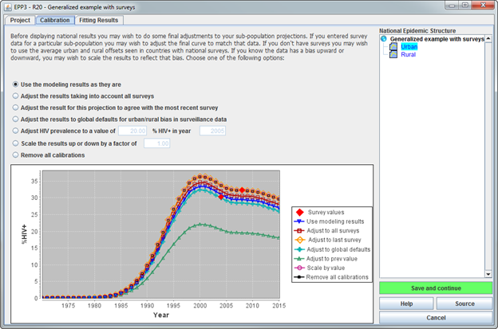
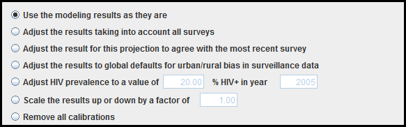

After completing your last sub-population fit on the Project page and clicking Save and continue, you are automatically transferred to the Calibration page. Here you apply whatever additional adjustments are needed to make each sub-population’s HIV prevalence and incidence trend more representative of the true trends in that group.
As discussed on the Survey page and Project page help, in both generalized and concentrated epidemics there is often an upward bias in surveillance data relative to what is found in the population as a whole. For generalized epidemics, the Project page has already applied either an automatic downward adjustment if there were no surveys or has used the surveys to calibrate your trends. If you entered surveys for a sub-population in a concentrated epidemic, e.g., from an IBBS study, they too were applied on the Project page to automatically calibrate the data for that sub-population.
However, even in concentrated epidemics where surveys may not be available, there are often issues with the surveillance data that may require further adjustments. Biases come from a number of sources. Often surveillance, especially in key sub-population at higher risk, is only carried out in major urban centers. Little data is available in smaller towns and cities or rural areas. Many times the surveillance sites are disproportionately in higher prevalence parts of the country. Most of these factors tend to introduce an upward bias into the surveillance data.
The type of setting in which data are collected can also influence the results. Often data for people who inject drugs are collected in prisons, detention centers, or clinic settings. Many studies have shown a higher risk of HIV among people who inject drugs with a history of incarceration. Thus, data from clinics and detention centers are probably biasing the results upward compared to what a community based survey might detect. In drug treatment clinics, the bias may go either way - and you will need to use local data to resolve whether you need to increase or decrease your surveillance values to reflect the situation in the larger community of people who inject drugs.
Similar considerations apply to prevalence data for MSM and female sex workers. MSM data are most often collected in cruising sites or in bars. And while there is substantial diversity in risk among sex workers in different settings, surveillance data are often collected in those settings that are most easily accessible or in STI clinics. Depending on whether accessible sex workers have higher or lower risk, the surveillance may be biased in either direction as an estimator of the prevalence for the population of sex workers as a whole.
More often than not, our surveillance systems in both generalized and concentrated epidemics tend to overestimate prevalence. Sometimes smaller ad hoc studies allow the level of this bias to be assessed and allow for calculation of how much we must calibrate our data up or down to be more representative of the actual prevalence trend in these populations. Before finalizing your projection, you should carefully consider whether you need to adjust the final HIV prevalence trend for any of your sub-populations. If so, before starting calculate the amount of adjustment.
The EPP calibration page, shown below, has been designed to give you substantial flexibility in how you adjust your prevalence trends. The page itself is relatively simple. At the top of the page you have a set of radio buttons that allow you to select different calibration methods. Below that is a large graph which allows you to see the effect of each of the calibrations you can choose. On the right is the ever-present National Epidemic Structure panel, required because calibrations are applied on a sub-population specific basis. Note that the graph shows you both the best fit curve and the survey data for easy comparison.

The seven options available to you are shown here:

This first option will keep whatever calibration was done on the Project page. To summarize briefly, if you had a generalized epidemic without surveys, it was downward adjusted by about 20%. If you used surveys in your fitting in either a generalized or concentrated epidemic, they were used to adjust the resulting projection. This is the default option; if you are happy with the outcomes from the fitting, leave this option checked. For more information about the calibrations done on the Project page, see the help for that page here.
Sometimes the statistical methodologies used on the Project page will not have the best fit curve go through your survey points exactly the way you like. In that case choose this option. This will take the best fit curve, calculate its offset from the survey data in each survey year, and then choose the adjustment that on average comes closest to the combined survey points.
Many users prefer to have the projection go through the last survey point, assuming that the most recent survey is their best estimate of current prevalence. If this is what you would like, select this option.
This option is identical to what is done on the Project page in the case of a generalized epidemic without surveys. It downward adjusts the projection by approximately 20%.
Suppose your surveillance for sex workers only includes brothel-based sex workers, but you know that they are much higher risk than other types of sex workers and you have a number of ad hoc surveys in different types of sex workers. By weighting the ad hoc survey prevalence measurements by the size of the different sex worker groups, you could estimate prevalence for a specific year that is more representative of all sex workers. This calibration option allows you to enter that prevalence level and year, and will adjust your projection to match.
Suppose you find that overall prevalence in your surveillance system is twice as high as the true national prevalence in a given sub-population. This might be the case, for example, if your surveillance data for MSM was only from the capital city and other smaller cities reported much lower prevalence. You could use this calibration option to apply a scale factor of 0.5 to make that prevalence for MSM more nationally representative. To use this option, just enter the scale factor to be used and it will be immediately reflected in the graph below.
The final option is to remove all calibrations. Even if calibrations had been done on the Project page, this will remove them.
After you have selected a calibration method, review the outcome in the graph to make sure it makes the adjustment you desired. If you're comfortable with it him then click Save and continue to move to the next sub-population. Please note that a calibration must be applied to each sub-population. After setting the calibration for the final sub-population, click Save and continue again to move on to the Fitting Results page.
Should you make any calibration choices besides “use the modeling results as they are”, you should use the Source button in the lower right-hand corner to document your calibration methodology. If you have weighted by different groups in a given sub-population give the sources of the prevalence data and the size estimates. If you relied on an estimate from a published paper, list that source. If you adjusted prevalence to the findings of an ad hoc survey, give the survey results and source. The calibrations made on this page are critical to ensuring a representative national projection, so others will benefit from your documenting them clearly.